max.temp <- c(22, 27, 26, 24, 23, 26, 28)6 Visualizing agricultural data
6.1 Learning outcomes
Choose graphs that match variable types; create and customize common plots; assemble panels and heatmaps; and provide static alternatives to interactive graphics.
In this section we will see how to draw basic and commonly used graphs and charts in R. Advanced plotting and graphs will be discussed later. Following graphs and charts are discussed here.
- Bar Plot or Bar Chart
- Pie Diagram or Pie Chart
- Histogram
- Scatter Plot
- Box Plot
6.2 Bar Plot
let us suppose, we have a vector of maximum temperatures (in degree Celsius) for seven days as follows.
Drawing barplot for the data
barplot(max.temp)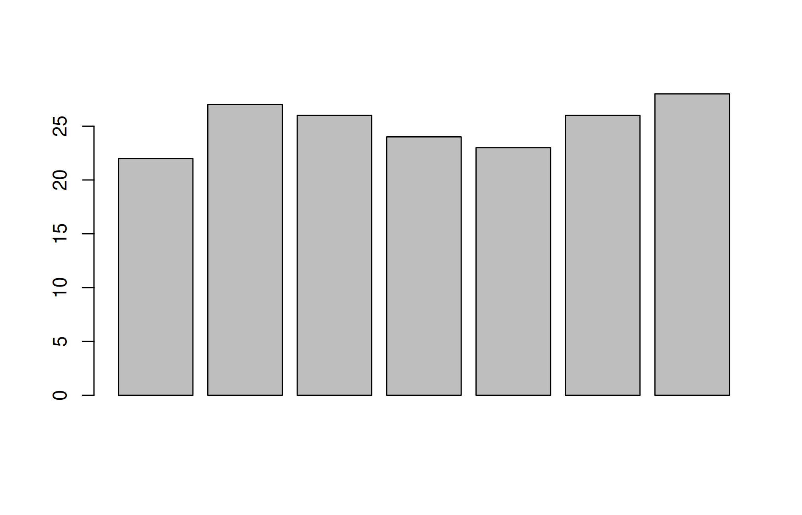
To modify the way our data is plotted, barplot() function may require a great deal of input. About them may be found in the help area.
# To know more about barplot
?barplot Some of the often used ones include main, which assigns a title, xlab and ylab, which offer axis labels, names.arg, which names each bar, col, which specifies colour, and others.
By adding the option horiz = TRUE, we can also plot bars in a horizontal direction.
# barchart with added parameters
barplot(max.temp,
main = "Maximum Temperatures in a Week",
xlab = "Day",
ylab = "Maximum temperature (degrees Celsius)",
names.arg = c("Sun", "Mon", "Tue", "Wed", "Thu", "Fri", "Sat"),
col = "#F9E79F", # hex colour code
horiz = FALSE)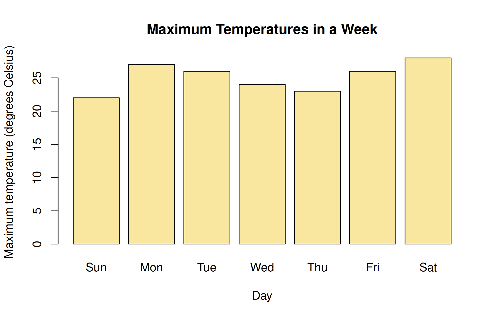
6.2.1 Hex colour codes
Hexadecimal colors are the visual language to tell a colour. When you want your graph to have a certain color, you tell it in the hex code.
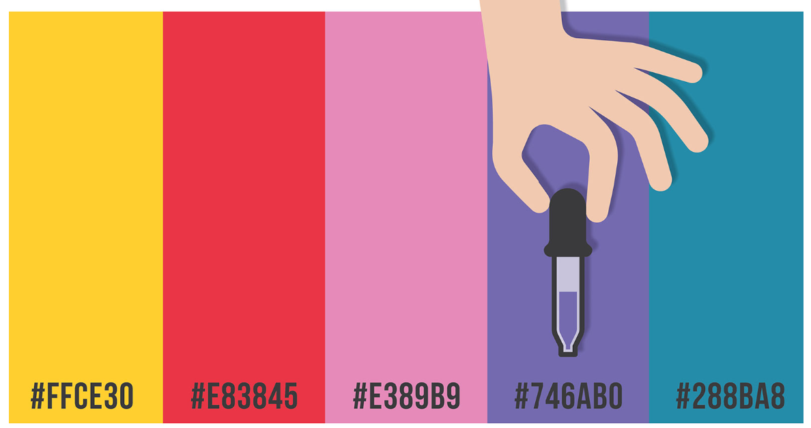
A 6-symbol code made up of up to three 2-symbol parts is known as a hex colour code. Each of the elements’ two symbols represents a colour value between 0 and 255. Hex colour code begins with a hash symbol(#).
Element 1: Red value
Element 2: Green value
Element 3: Blue value
The code converts each value into a distinct 2-digit alphanumeric code. For instance, the hexadecimal representation of the RGB value (224, 105, 16) is E06910.
More than 16 million distinct colours may be shown using hexadecimal coding, which is estimated to be more than the human eye can distinguish.
Popular hex codes
| Color | RGB | Hex Color Code |
|---|---|---|
| Black | (0, 0, 0) | #000000 |
| Blue | (0, 0, 255) | #0000FF |
| Gray | (128, 128, 128) | #808080 |
| Green | (0, 128, 0) | #008000 |
| Purple | (128, 0, 128) | #800080 |
| Red | (255, 0, 0) | #FF0000 |
| White | (255, 255, 255) | #FFFFFF |
6.2.1.1 How to get hex codes
You can easily find the hex code for the colour you want using a colour picker. Just copy the hex code and use it in the R code.

6.3 Boxplot
A box and whisker plot, often known as a box plot, shows a data set’s five-number summary. The minimum, first quartile, median, third quartile, and maximum make up the five-number summary.
A box is drawn from the first quartile to the third quartile in a box plot. At the median, a vertical line passes through the box. In the usual R convention, whiskers extend to the most extreme observations within 1.5 IQR of the hinges. Observations outside them are drawn separately; whiskers need not reach the sample minimum and maximum.
6.3.1 Anatomy of boxplot
Figure Figure 6.4 below shows the parts of a box plot
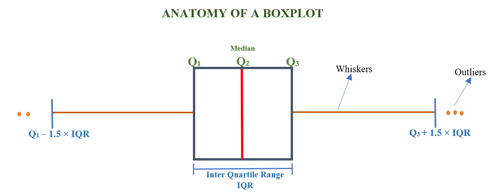
6.3.1.1 Minimum Value
The lower outlier fence is \(Q_1 - 1.5\times IQR\). It is a threshold, not the sample minimum. The lower whisker reaches the smallest observed value within that fence. The upper fence is \(Q_3 + 1.5\times IQR\). The retained illustration should be read with this distinction in mind.
6.4 Completing the base-R graphical toolkit
The original notes list bar charts, pie charts, histograms, scatter plots, and boxplots. The detailed bar-chart and colour lessons above are retained. Let us now complete the remaining base-R examples before moving to the layered graphics system. The purpose is to understand which information each graph displays, not to memorize several commands without a question.
6.4.1 Histogram: the distribution of a quantitative measurement
plot_yield <- read.csv("data/crop_trial.csv")
hist(plot_yield$yield_t_ha, breaks = "Sturges", col = "#A9D0B5", border = "white",
main = "Distribution of grain yield", xlab = "Grain yield (t/ha)",
ylab = "Number of plots")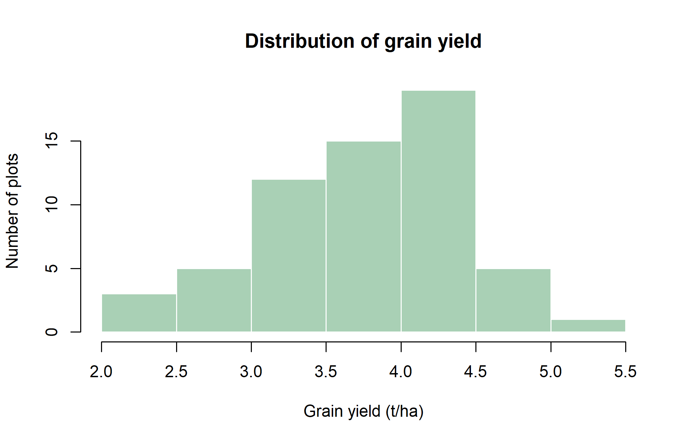
Adjacent histogram rectangles represent intervals on a quantitative scale. A bar chart, by contrast, represents distinct categories. Moving a category bar does not change its meaning; reordering the numeric intervals of a histogram would destroy its meaning. With unequal-width histogram intervals, density rather than raw height is needed for area to represent frequency correctly. Start with equal-width intervals while learning the distinction.
6.4.2 Scatter plot: relating two quantitative variables
with(plot_yield, plot(nitrogen_kg_ha, yield_t_ha, pch = 19, col = "#3C6E51",
xlab = "Applied nitrogen (kg/ha)", ylab = "Grain yield (t/ha)",
main = "Yield and nitrogen application"))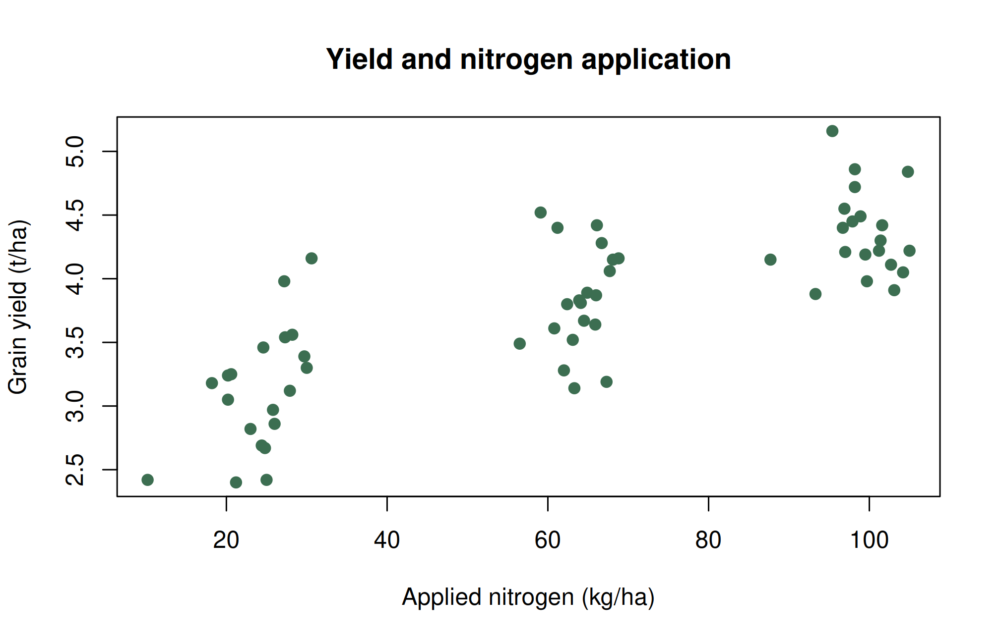
Look for direction, curvature, clusters, and unusual observations. A positive pattern means that larger values of one variable tend to occur with larger values of the other in these observations. It does not establish that increasing nitrogen alone would cause the same change. Later figures retain treatment information to help inspect that limitation.
6.4.3 Pie diagram: parts of one whole
crop_area_ha <- c(Rice = 40, Maize = 25, Pulses = 20, Vegetables = 15)
pie(crop_area_ha, labels = paste0(names(crop_area_ha), " ", crop_area_ha, "%"),
col = c("#34704C", "#91B77D", "#E6C86C", "#B69BC5"),
main = "Illustrative allocation of 100 ha")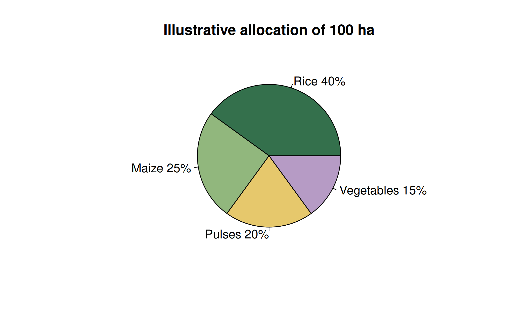
The example totals 100 ha, so the numerical areas happen also to equal percentages. That is not generally true. Calculate percentages as 100 * area/sum(area). A pie chart is meaningful only when categories are nonoverlapping parts of the same total. A bar chart usually makes close numerical comparisons easier. Avoid three-dimensional perspective, which distorts apparent area.
6.4.4 Boxplot: comparing distributions
boxplot(yield_t_ha ~ treatment, data = plot_yield, col = "#DDEBDD",
xlab = "Treatment", ylab = "Grain yield (t/ha)", outline = FALSE)
stripchart(yield_t_ha ~ treatment, data = plot_yield, vertical = TRUE,
method = "jitter", add = TRUE, pch = 19, col = "#245A42")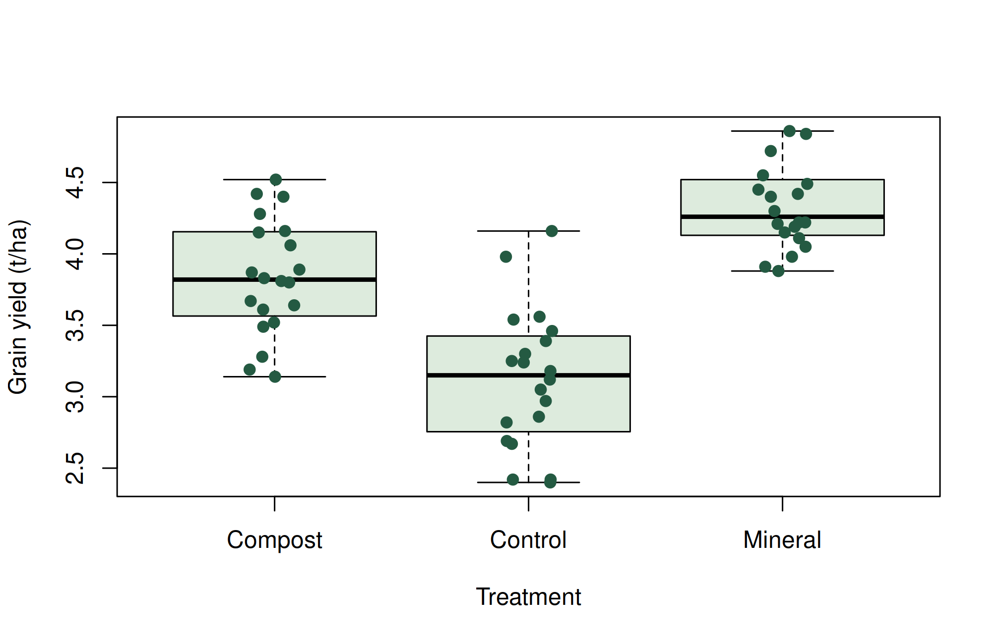
The formula yield_t_ha ~ treatment tells R to compare yield distributions across treatment categories. The added points reveal sample size and clustering that a box alone can hide. outline = FALSE suppresses separate boxplot outlier symbols here because all observations are already added by the strip chart; it does not remove those observations from the data or the calculation.
6.5 Agricultural applications, interpretation, and further practice
6.5.1 Match the graph to the question
A histogram shows the distribution of one quantitative variable. A scatter plot shows the relationship between two quantitative variables. A bar chart compares counts or explicit summaries across categories. A boxplot compares distributions. A line plot connects observations in a meaningful order, usually time. Avoid connecting unrelated plots simply because their records are adjacent.
The earlier lecture notes introduced base R graphics. Their temperature example remains a useful first demonstration. Here the temperature axis is correctly labelled on the vertical axis.
max_temp <- c(22, 27, 26, 24, 23, 26, 28)
barplot(max_temp, names.arg = c("Sun", "Mon", "Tue", "Wed", "Thu", "Fri", "Sat"),
xlab = "Day", ylab = "Maximum temperature (degrees C)", col = "#66A182")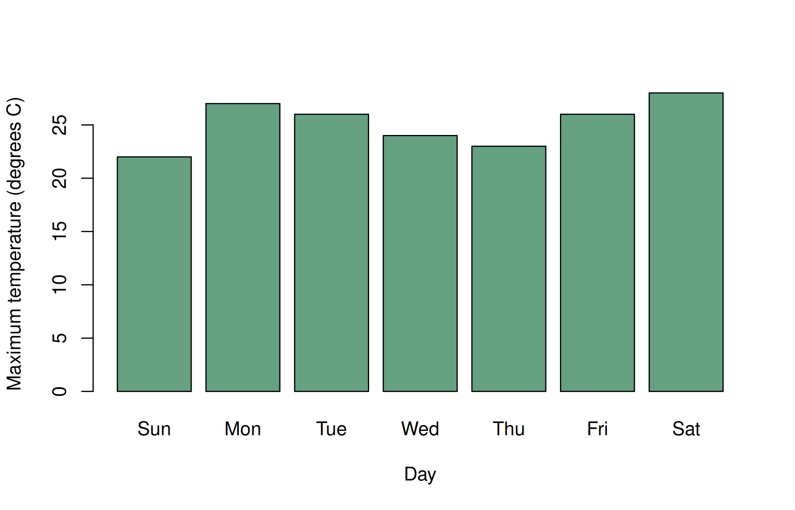
6.5.2 Build plots in layers
In ggplot2, data supplies observations, aes() maps variables to visual properties, and a geometry draws marks. Set a fixed colour outside aes(); map a grouping variable to colour inside it.
library(ggplot2)
crop <- read.csv("data/crop_trial.csv")
scatter <- ggplot(crop, aes(nitrogen_kg_ha, yield_t_ha, colour = treatment)) +
geom_point(size = 2, alpha = .8) +
labs(x = "Applied nitrogen (kg/ha)", y = "Grain yield (t/ha)",
colour = "Treatment", caption = "Simulated teaching observations") +
scale_colour_viridis_d(end = .85) + theme_minimal(base_size = 12)
scatter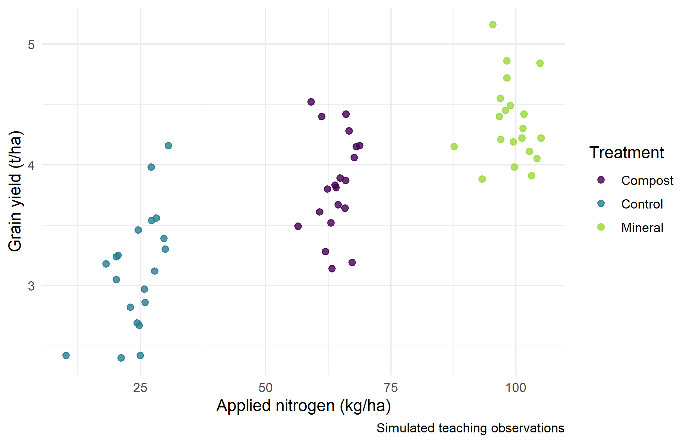
Ask whether the apparent relationship persists within treatments. Treatment and nitrogen differ together in this simulation, so a pooled trend cannot establish a causal nitrogen effect. Visual encodings should clarify this structure.
histogram <- ggplot(crop, aes(yield_t_ha)) +
geom_histogram(binwidth = .3, boundary = 0, fill = "#4C956C", colour = "white") +
labs(x = "Grain yield (t/ha)", y = "Number of plots") + theme_minimal()
histogram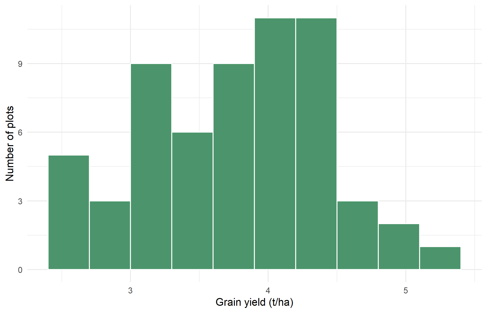
Bin width changes the apparent shape of a histogram. Compare several widths before describing skewness or multiple peaks. Use a common scale when comparing groups.
6.5.3 Distribution plots and truthful summaries
boxes <- ggplot(crop, aes(treatment, yield_t_ha)) +
geom_boxplot(outlier.shape = NA, fill = "#DDEBDD") +
geom_point(position = position_jitter(width = .12, height = 0, seed = 531),
alpha = .6, size = 1.5) +
labs(x = "Management treatment", y = "Grain yield (t/ha)") + theme_minimal()
boxes
ggplot(crop, aes(yield_t_ha, fill = treatment)) +
geom_density(alpha = .3) + facet_wrap(~ treatment) +
labs(x = "Grain yield (t/ha)", y = "Density") + theme_minimal()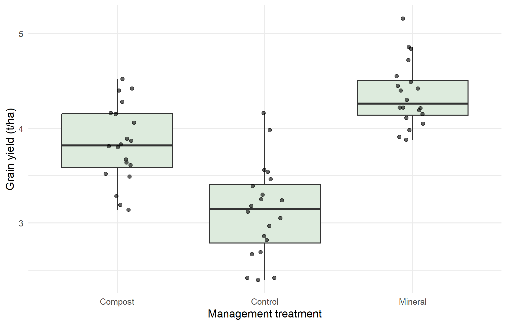
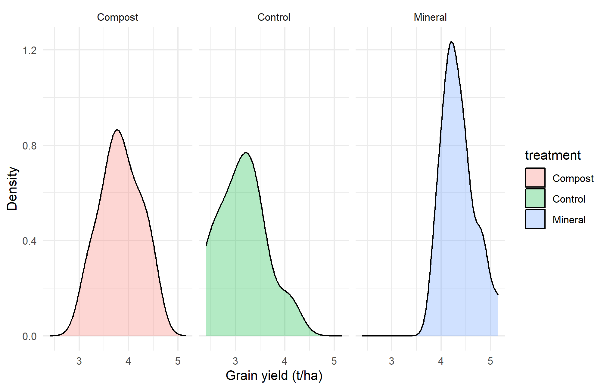
In R’s usual boxplot, the box spans Q1 to Q3, the internal line marks the median, and whiskers reach the most extreme observations within 1.5 IQR of the hinges. The whiskers are not necessarily the minimum and maximum, nor are their endpoints necessarily equal to the theoretical fences. Points beyond whiskers are flagged observations, not proven errors. Small-sample hinge conventions can differ slightly between plotting systems.
A density curve is smoothed; its bandwidth affects the shape, and its vertical scale is density rather than counts. For small samples, show observations as well. When presenting means as bars, start the quantitative bar axis at zero and explain any uncertainty intervals. An interval describing standard deviation is different from a confidence interval for a mean.
means <- aggregate(yield_t_ha ~ treatment, crop, mean)
ggplot(means, aes(treatment, yield_t_ha)) +
geom_col(fill = "#427A5B") +
labs(x = "Treatment", y = "Mean grain yield (t/ha)") + theme_minimal()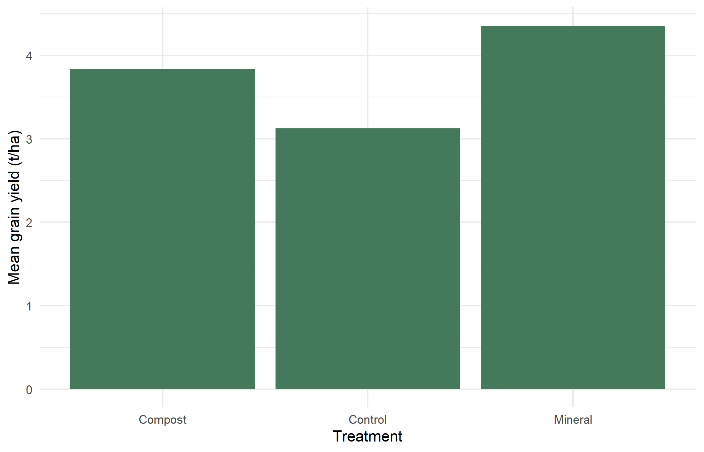
6.5.4 Heatmaps, panels, and interaction
A heatmap uses colour to encode a numeric value. Nutrients measured on different scales need careful handling. Here each nutrient is standardized across plots, so colour describes relative position within that nutrient, not an absolute concentration or a fertility recommendation.
soil <- read.csv("data/soil.csv")
z <- scale(soil[, c("available_n_mg_kg", "available_p_mg_kg", "available_k_mg_kg")])
heat <- data.frame(plot_id = soil$plot_id, z, check.names = FALSE)
heat <- tidyr::pivot_longer(heat, -plot_id, names_to = "nutrient", values_to = "z")
ggplot(heat, aes(nutrient, plot_id, fill = z)) + geom_tile() +
scale_fill_gradient2(low = "#3465A4", mid = "white", high = "#A52A2A", midpoint = 0) +
labs(x = "Soil variable", y = "Plot", fill = "Standardized\nvalue") +
theme_minimal() + theme(axis.text.y = element_blank(), axis.ticks.y = element_blank())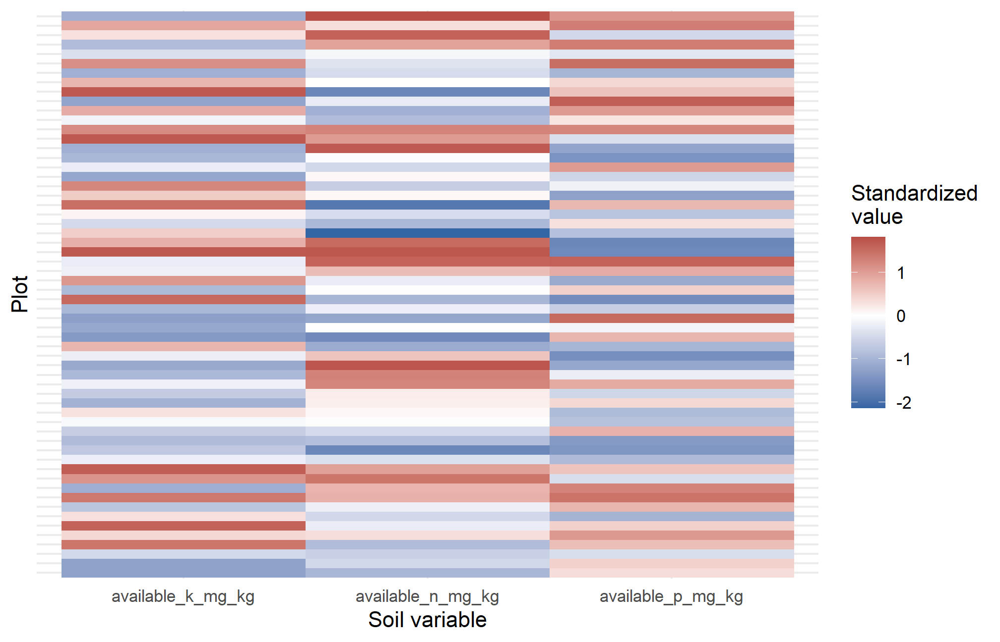
patchwork::wrap_plots(scatter, histogram, boxes, ncol = 2)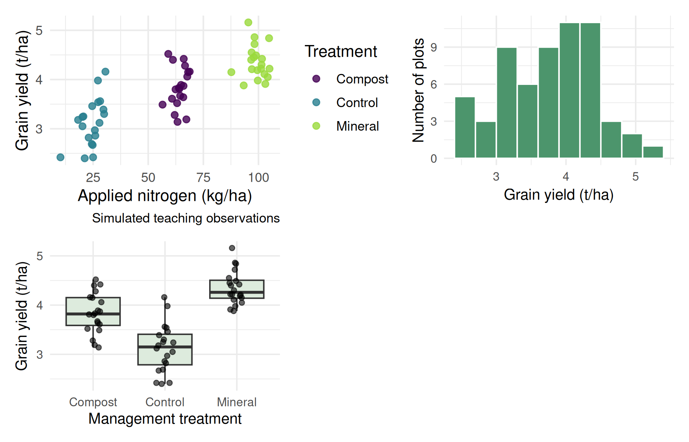
Facets create comparable panels from groups within one plot. patchwork combines different plots. Use readable labels, sufficient contrast, and shapes or panels when colour alone is insufficient. A figure caption should identify the dataset, units, sample, and any transformation.
if (knitr::is_html_output()) {
plotly::ggplotly(scatter)
} else {
scatter
}dir.create("outputs", showWarnings = FALSE)
ggsave("outputs/yield_scatter.png", scatter, width = 7, height = 4.5, dpi = 300)Interactive tooltips support exploration in HTML. They cannot carry essential information that disappears in PDF or Word; provide a static counterpart and describe the finding in prose.
6.5.5 Practicals 6–7 and exercises
- Draw a scatter plot, a histogram, and a boxplot. Write one sentence stating what each reveals and one limitation.
- Compare histogram bin widths of 0.15, 0.3, and 0.6 t/ha. Which features persist?
- Create treatment panels coloured by variety. Explain any difference from the pooled plot.
- Create a two-panel figure and export it at 300 dpi with readable labels.
- Explain why a standardized soil heatmap cannot directly classify a field as nitrogen-deficient.
Chapter review. A good figure makes comparisons clear and preserves units, distributions, and relevant grouping. Attractive decoration cannot compensate for a misleading scale.
6.6 Live R laboratory
Make a colourful crop plot
Edit the code, then select Run R. The first run downloads R into your browser and may take a little time. Copy code also lets you use this example in RStudio.
fertilizer <- c(0, 30, 60, 90, 120, 150)
yield_t_ha <- c(2.1, 2.9, 3.6, 4.0, 4.2, 4.1)
plot(fertilizer, yield_t_ha, pch = 19, cex = 1.5,
col = "#237f83", xlab = "Nitrogen (kg/ha)",
ylab = "Yield (t/ha)", main = "Simulated nitrogen response")
lines(fertilizer, yield_t_ha, col = "#bd7921", lwd = 2)
grid()Investigate. Replace pch = 19 with pch = 17 and choose a new colour. Describe the apparent plateau, while remembering that these illustrative points do not establish an optimum fertilizer dose.
From the browser to your practical notebook
Record the input you changed, the output you obtained, and your interpretation. These live examples use base R and work independently. The full chapter examples, including package-based analyses, remain available with copy buttons for RStudio. Browser objects last until this page is reloaded; Reset code restores the editor text. Internet access is needed on first use; long or interactive desktop tasks belong in RStudio.
Historical Insights
William Playfair, a Scottish engineer, published the first bar charts and line graphs of economic data in his Commercial and Political Atlas (1786) and the first pie chart in 1801. Florence Nightingale’s polar area diagrams (1858) persuaded the British government to reform army sanitation.
6.7 Chapter Summary
Fill in the blanks
Answers are given at the end of the chapter.
- A __________ is used to compare the frequencies or means of categories.
- The distribution of a continuous variable is shown by a __________.
- A box plot shows the five-number __________.
- In a box plot the box spans from \(Q_1\) to __________.
- Whiskers end at the most extreme observations within __________ IQR of the hinges.
- The relationship between two continuous variables is shown by a __________ plot.
- A hex colour code consists of three pairs giving red, green and __________ values.
- In
ggplot2, variables are mapped to aesthetics and drawn with __________.
Short-answer questions
- Match a graph to each of these: a categorical variable, a continuous variable, two continuous variables, groups to compare.
- Explain the parts of a box plot.
- Why is a bar plot usually preferred to a pie chart?
- What is the difference between the fences and the whiskers of a box plot?
- How do you save a plot at 300 dpi in R?
Numerical and conceptual questions
Answers are given at the end of the chapter.
- A data set has \(Q_1 = 20\) and \(Q_3 = 30\). Find the lower and upper fences.
- In a pie chart, what angle represents a category with 30% of the total?
- Write the hex code of the colour with RGB (224, 105, 16).
Important formulae
Box plot fences:
\[ Q_1 - 1.5\,(Q_3-Q_1), \qquad Q_3 + 1.5\,(Q_3-Q_1) \tag{6.1}\]
Angle of a sector in a pie chart:
\[ \theta = \frac{\text{category value}}{\text{total}} \times 360° \tag{6.2}\]
Quick revision
- Category counts or means → bar plot; distribution → histogram or box plot; relationship → scatter plot.
- Fences are cut-offs; whiskers end at real data values; points beyond are flagged, not deleted.
- Pie charts → only for a few parts of one whole.
- Labels, units and captions → every published graph.
- Export with
png(..., res = 300)or the Plots pane.
Answers to fill in the blanks
1. bar plot 2. histogram 3. summary 4. \(Q_3\) 5. 1.5 6. scatter 7. blue 8. geoms
Solutions to numerical and conceptual questions
- IQR \(=10\); by Equation 6.1 the fences are \(20-15=5\) and \(30+15=45\).
- By Equation 6.2, \(0.30 \times 360 = 108°\).
- 224 = E0, 105 = 69, 16 = 10, so
#E06910.